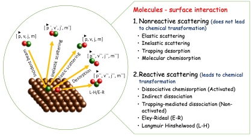
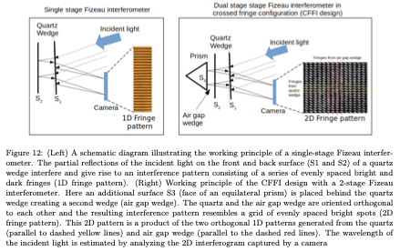

About Me
Postdoctoral researcher working on molecular scattering, surface reaction dynamics, and development of advanced scientific instrumentation.
Postdoctoral Researcher · Surface Dynamics Lab · Swansea University
Postdoctoral researcher working on molecular scattering, surface reaction dynamics, and development of advanced scientific instrumentation.

My research is divided into CO₂ dissociation on metal surfaces and development of advanced diagnostic tools.

CO₂ dissociation on Cu surfaces under UHV conditions with strong dependence on incident energy, orientation, and vibrational excitation.

Fizeau interferometer-based high-precision wavelength measurement system.
Publication Link

MHz-level laser stabilization using interferometric feedback systems.
Publication Link
Compact high-resolution spectrometer for wavelength and Raman measurements.
Publication Link
Ultra-sensitive detection of weak gas-phase transitions.
Publication Link

Molecule–surface scattering and stereodynamics.
CO₂ dissociation on Cu surfaces and reaction dynamics.
Laser systems, spectroscopy tools, and beam sources.
CO₂ dissociation on Cu surfaces
DOI Link
Surface scattering dynamics
DOI Link
Laser stabilization systems
DOI Link
Email: s.k.singh@swansea.ac.uk